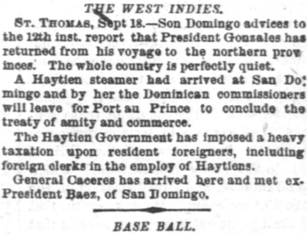
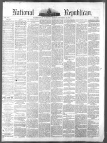

See the full pageVer la página completaA Haytien steamer had arrived at San Domingo and by herUn vapor haitiano había llegado a San Domingo, y por
The National Republican reported on September 29, 1874, that President Gonzales returned from a voyage to the northern provinces and that the country remained completely quiet. Dominican commissioners were set to leave for Port-au-Prince aboard a Haytien steamer to conclude a treaty of amity and commerce, while the Haytien Government had imposed heavy taxation on resident foreigners and foreign clerks. Additionally, General Caeeres arrived and met with ex-President Baez of San Domingo.El National Republican informó el 29 de septiembre de 1874 que el presidente González regresó de un viaje a las provincias del norte y que el país se mantenía en total tranquilidad. Comisionados dominicanos estaban listos para partir hacia Puerto Príncipe a bordo de un vapor haitiano con el fin de concluir un tratado de amistad y comercio, en momentos en que el Gobierno haitiano había fijado fuertes tributos a los extranjeros residentes y a los dependientes comerciales extranjeros. Asimismo, el general Cáceres llegó y se reunió con el expresidente Báez de Santo Domingo.
FULL TEXT:TRADUCCIÓN:
THE WEST INDIES.LAS INDIAS OCCIDENTALES.
ST. THOMAS, Sept 18.—Son Domingo advices to the 12th inst. report that President Gonzales has returned from his voyage to the northern provinces. The whole country is perfectly quiet.SANTO TOMÁS, 18 de septiembre.—Noticias de Santo Domingo hasta el 12 del corriente informan que el presidente Gonzales ha regresado de su viaje a las provincias del norte. Todo el país está perfectamente tranquilo.
A Haytien steamer had arrived at San Domingo and by her the Dominican commissioners will leave for Port au Prince to conclude the treaty of amity and commerce.Un vapor haitiano había llegado a Santo Domingo y en él los comisionados dominicanos partirán hacia Puerto Príncipe para concluir el tratado de amistad y comercio.
The Haytien Government has imposed a heavy taxation upon resident foreigners, including foreign clerks in the employ of Haytiens.El Gobierno haitiano ha impuesto una pesada tributación a los extranjeros residentes, incluyendo a los empleados extranjeros al servicio de haitianos.
General Caceres has arrived here and met ex-President Baez, of San Domingo.El general Cáceres ha llegado aquí y se ha reunido con el ex Presidente Báez, de Santo Domingo.
National Republican. Washington City (D.C.), September 29, 1874. Page 1.